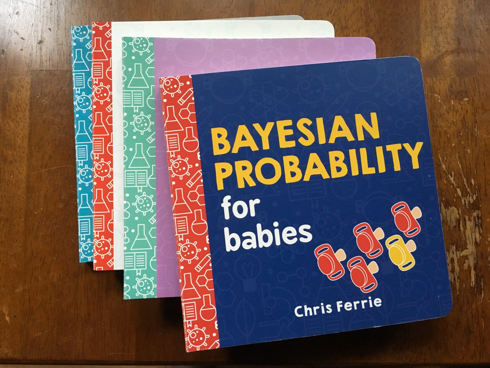
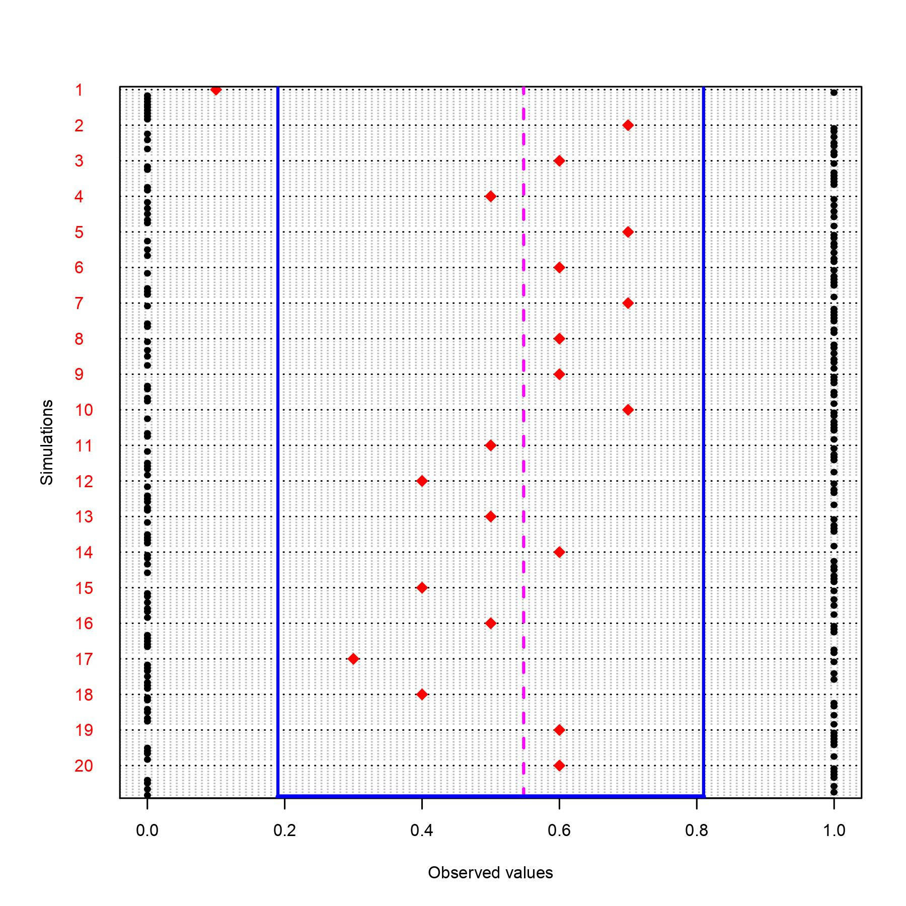

What is a Bayesian credible interval?
![]()

Happy new year everybody! Yeah, I know it already almost February but I have been incredibly busy the past few weeks after the Xmas break. From getting familiar with the courses I am teaching this term to providing consultancy advice on statistical problems for students from FHML at UM. This last task has been particularly challenging as I did not have a clear idea of what was the statistical background of the students I has to work with and, in fact, the level of statistical knowledge varied considerably depending on the specific cases considered and I had to adjust my way of interacting with the clients on a case-by-case basis. Overall, I have learned a lot in these past weeks, from doing lots of online teaching and consultations, and I believe I am now well prepared to deal with more students, which is something I am looking for now that I have this experience. So, come at me students!
Now, leaving aside this little off-topic with respect to the content of this post, let us go back to the key aspect which I glossed over last month. The question that was asked by Dr. Morris was how do you interpret a Bayesian credible interval?. In his comment he argued that the interpretation of such interval was not clear when compared, for example, to the frequentist interpretation of confidence intervals, i.e. the range of likely values for the population parameter of interest based on a \((1-\alpha)\%100\) confidence level.

The definition relies on the typical frequentist concept of treating sample data as random quantities that can be hypothetically drawn many times from the population and for each of these data a different confidence interval can be computed based on the sample statistics. This procedure ensures that out of all possible samples that I can draw from the population (and therefore out of all CIs I can compute), about \(95\%\) of these intervals will contain the true (unknown) population parameters of interest which are considered fixed quantities. This, however, means that if I consider the specific CI that I computed over my collected sample data, I have no guarantee that it contains the true parameter value. Indeed, it is always possible that I got particularly unlucky with my sample and my CI belongs to that \(5\%\) (out of the many possible that I could compute based on many drawn samples) that will not contain the true parameter value. This means that, although very powerful on a theoretical level, the frequentist argument may not be that useful when I have to focus on the available data that I have, rather than relying on long-term justifications which may not be applicable to my specific situation.
So, the natural question in situations in which this approach does not answer ver well at my research question is, is there another way?. The answer is of course yes and one of these alternative approaches is the Bayesian perspective. In contrast to the frequentist argument, the Bayesian approach treats the statistical problem under examination under a different perspective. First, the (unknown) parameters of interest are not fixed but are random quantities generated according to some probability distribution (the prior distribution). Since this distribution is assigned to the parameter before looking at the data, it corresponds to a mathematical representation of the degree of belief that one has about the possible values of the parameter of interest which must be formulated prior to observing the available data (it may be based on previous research or completely subjective opinions, for example). At this point, the Bayesian procedure simply consists in using the available data, which are treated as fixed, to update our initial belief about the possible parameter values through the Bayesian theorem, i.e. \(p(\theta|y)=\frac{p(y\mid \theta)p(\theta)}{\int p(y|\theta)p(\theta)d\theta}\).
This updated state of belief for the parameter values is itself a probability distribution, known as the posterior distribution \(p(\theta \mid y)\). This distribution represents how, following a rational and coherent procedure intrinsic to the Bayesian theorem, the initial belief about \(\theta\) (expressed by the prior \(p(\theta)\)) is updated based on the available data (expressed by the likelihood \(p(y\mid \theta)\)). The posterior is always a compromise between prior and likelihood but since typically the contribution to the likelihood is provided by \(n\) data points, the weight of the likelihood is often much larger (equal to \(n\)) compared with that of the prior (equal to \(1\)). Thus, the more data become available the less is the weight of the prior on the posterior and when \(n \rightarrow \infty\) the posterior is completely dominated by the likelihood. In addition, since the posterior is a probability distribution, it is always possible to directly summarise the uncertainty around certain posterior quantities of interest (e.g.~mean or mode). Thus, we can calculate the range of values within which our estimate lies with a given probability of say \(95%\), corresponding to our credible interval.
So the key difference between the frequentist and Bayesian approach is from a theoretical perspective of how probability is conceived: a long-run frequency vs degree of belief definition. This has also implications on how uncertainty around our estimates of interest is expressed: a general rule that applies across all possible cases but that does not guarantee the the validity of the conclusions in each specific case vs probabilistic approach whose results specifically applies to the case under consideration but that does not guarantee that its conclusions are valid across all possible cases.
A hardcore frequenstist may also point out that Bayesian inference requires prior distributions that are reasonable as otherwise they may drive your results away from the truth. However, my reply would be yes, it is always important that priors are defined based on some available and plausible information (or simply use very loosely defined priors in case such knowledge is not available), but the question is how you define the truth. Is it a single value? In my opinion it is more reasonable to think at the truth as a distribution in that models are only used as a way to simply the reality and not to precisely represent it. Not rejecting a true null hypothesis may be ok but what then? should I continue testing for many different values for what I believe is the true population parameter? Instead, I would prefer to make assumptions about what are possible values for the parameters (therefore accounting for uncertainty around which values are more/less likely a priori) and then use the data I collect to either support/contrast those assumptions.
The appealing of the Bayesian approach is precisely to be very practical: combine the current data and an initial assumption about parameter values that generated the data to update my initial belief (in a rational and coherent way) and quantify how the uncertainty around the likely values for the parameter has changed after observing the data. This straightforward interpretation of how to deal with expressing the uncertainty for any unobserved quantity (parameter, prediction, missing value) makes the Bayesian approach optimal for handling decision-making problems where the quantification of the uncertainty around the conclusions is a fundamental element in the decision process.